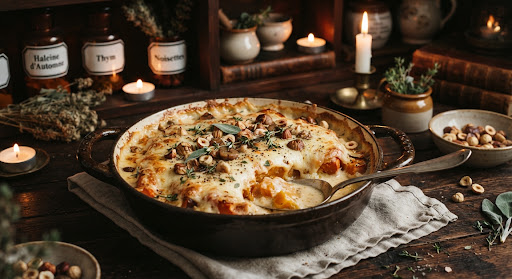

Four & Gratin
local_fire_department
🪵 Traditionnel
schedule 45 min
group 4-6 convives
energy_savings_leaf Cocotte & Four
Gratin de potimarron rôti, noisettes & châtaignes
spa
Crème d’Isigny, parmesan affiné 24 mois, pointe de muscade fraîchement râpée